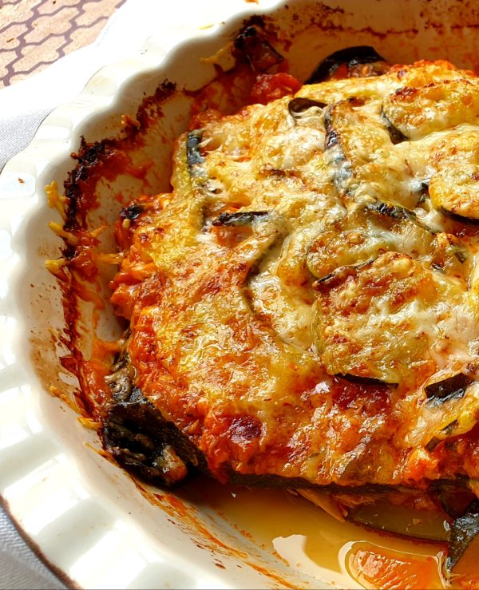

Bowl
Return HomeEsta es otra página especializada en cocina y encontrarás recetas de temporada muy interesantes, cuidadas y explicadas paso a paso. Otro de los puntos fuertes de la web es que no sólo cuenta con recetas organizadas por temática sino que también encontrarás recopilatorios según fechas o temáticas. Es decir, verás las mejores recetas para hacer con chocolate, los mejores postres de Carnaval o los mejores dulces de Navidad. También es muy completa y recomendable la sección específica de Cocinatis para trucos y consejos para cocinar en una sección específica.Por ejemplo, cómo cocer huevos, cómo hacer patatas al microondas…
| Lasaña de verduras y atún | |
|---|---|
| Ingredients: |
|
| Instructions: |
|
| Result: |  |
Este proyecto inicio como la forma de plasmar la afición al mundo de la gastronomía de Jesús Miguel García Martín (Iscariote), y la informática de Antonio Moreno Pérez. (ministrillo). Un pequeño blog en WordPress fue el germen de lo que se ha convertido eladerezo.com, una WEB con miles de Post y con cientos de miles de visitantes únicos todos lo meses. Citados en el New York Times, elegidos por algún medio entre los 10 mejores blogs de cocina del mundo, amables artículos de amigos en El País o en El Mundo, pequeños reportajes de televisión como este del programa enredados de La 2, colaborando con la revista hola.com el Portal femenino líder en internet , todo esto que nos llena de orgullo, os lo debemos a todos vosotros, lectores fieles que nos premiáis con vuestra atención.